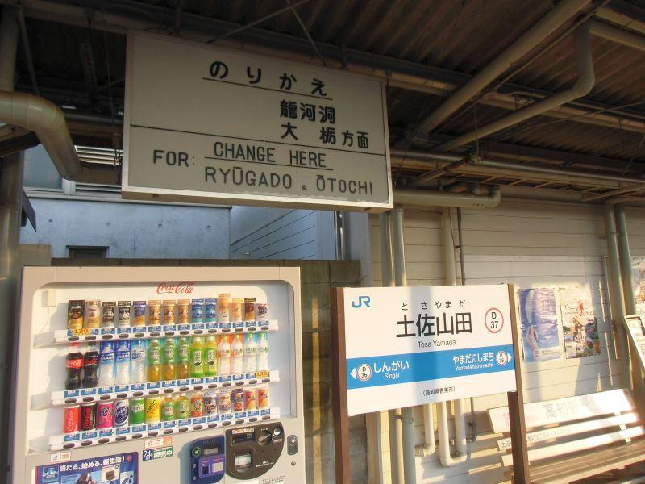
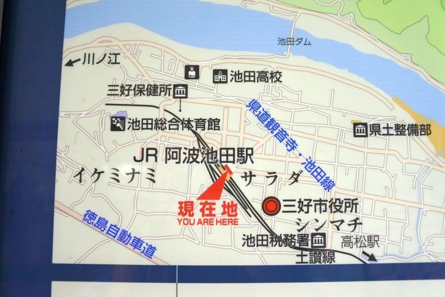

国鉄の末裔と、急勾配区間の先にあるスイッチバック駅 < JR土讃線 / 高知～土佐山田～新改 >
全国で最も新しい時代に、県外と鉄道が繋がった高知県(沖縄・北海道は除く)。県の玄関口・高知駅は近年高架駅に装いを新たにしました。
しかしながら走っている鉄道は電車ではなく気動車。通称「キシャ」。列車を動かす動力は電気(＝電車)ではなく、軽油(＝気動車)。つまりトラック等と同じ。
駅舎は近代的なのに、大きなディーゼルサウンドを響かせて 独特の排気臭を振りまきながら、力強く発車する列車の姿を見ることができます。
列車旅の真髄は鈍行列車にあり！
土佐山田駅から先は 一日数本しか運転されていない各駅停車に乗り、目的地を目指します。
四国で二つ残った、国鉄バスの末裔
土佐山田駅(とさやまだえき / 高知県香美市)
土佐山田駅の開業は大正14年(1925)。
当地に土讃線が開業した時からの駅で、駅構内には無骨な鉄骨と板張りの跨線橋が レトロ感を醸し出しています。

特急も停車する 地域の拠点駅の一つですが、もう一つ大きな特徴が「JR四国バス大栃線」
「おおどちせん」
と読みます。
開業は昭和10年(1935)。鉄道として計画された蕨野線の先行路線として、省線(省線→国鉄→JR)のバス路線として開業したもの。
昭和末期の国鉄分割民営化に伴い JR四国に継承された路線の一つでしたが、他方では徐々に廃止されていき 現在は「松山高知急行線 / 松山～久万高原」と、こちら「大栃線 / 山田～大栃」の二路線を残すのみとなりました。
土佐山田駅のサブタイトルは「龍河洞とアンパンマンの駅」
沿線には景勝地「龍河洞」があり、昭和20年・30年台の観光ブームでは、乗客の積み残しが発生するほど 活況を呈しました。
その後はモータリゼーションの発達によって 乗客は減少。龍河洞方面へのバスは廃止になった(現在はとさでん交通神母木・龍河洞線が再営業する形で存続しています)。
代わって沿線の大きな見所となっているのが、香美市立やなせたかし記念館。
通称「アンパンマンミュージアム」
同施設は、地域のみならず 高知県を代表する観光地となり、そちらへのアクセスを担う路線として機能しています。
列車は急勾配区間へ
土佐山田駅を発車した列車は 徐々に街を離れて行きます。
地図等で路線を眺めて見ると、土佐山田駅から先の路線は カーブが連続していることがわかります。
ここから次の新改駅まで急勾配区間。カーブを描く路線を取ることで 距離増と引き換えに勾配を緩めているとは言え、鉄道にとっては大きな難所。性能が上がった現代の列車でさえ、降雨時や落ち葉が多い時期には 車輪の空転が発生するなど、険しい山越え区間になっています。
この区間には トンネルがいくつか存在します。
よく観察するとレンガ積み。良き古さを感じさせます。当区間の敷設は昭和5年(1930)ですが、当時の最新技術であったことでしょう。
列車と鉄橋
この組み合わせは、旅情を感じさせる黄金比。
「ガタンゴトン...」
鉄の塊同士が触れ合うことによって発生する規則音は、現代の技術を駆使した コンクリート橋では、感じることができません。
土讃線に二つあるスイッチバック駅へ入線
坂を駆け上がって行くと、目の前に行き止まりの引き込み線が見えてきます。
直進
右後ろ
左前
この三方向に分ける分岐器が見えてきます。
ハサミのような形状を指して、この形を「シーザスクロッシング」と呼びます。単線区間で行き違いや後続車を先行させるために 列車を退避させる場所に設置される設備。

ここでは、
対向列車との行き違い
後続の特急を先行させるための退避
駅に停車するため
これらの理由により、上下の各駅停車が シーザスクロッシングと引き込み線を経由して、引き込み線の奥にある新改駅に入線します。
今回の列車の旅はここまで。高知～土佐山田～新改の各駅停車に乗車しました。続きは新改駅の記事をご覧ください。
土佐山田駅
< 自家用車 >
高松駅から 約1時間45分、124km
高知龍馬空港から 約15分、8km
< 公共交通機関 >
JR土讃線 土佐山田駅 下車
※ 主な地点からの最速・最短距離
関連記事

2017,10/23 手作りの田舎そばを食べに、そばやへ < そばや / 徳島県 >

2017,11/26 四国の鉄道が繋がった瞬間を見届けた立会人 < 土讃線三縄駅 / 徳島県 >

2018,1/30 やまびこ打線で一世を風靡した高校がある街の珍地名 < 阿波池田駅 / 徳島県 >

2018,5/18 空から見る香川県 < 香川県中讃・西讃ほか >

2018,6/17 各駅停車が通過する駅？ 山中のスイッチバック駅 < 新改駅 / 高知県香美市 >

2018,12/8 ユニークな駅名の高知県の鉄道交通中心地 < 後免駅 / 高知県南国市 >

2019,1/1 雄大な太平洋を存分に楽しむことができるローカル線・前編 < ごめん・なはり線 / 高知県東部 >

2019,1/7 雄大な太平洋を存分に楽しむことができるローカル線・後編 < ごめん・なはり線 / 高知県東部 >

2019,1/19 静かな無人駅で、みどころを見つける旅 < 大杉駅 / 高知県大豊町 >

2019,6/6 徳島県山中に位置する、国内トップクラスの秘境駅・前編 < 坪尻駅・徳島県三好市池田町 >